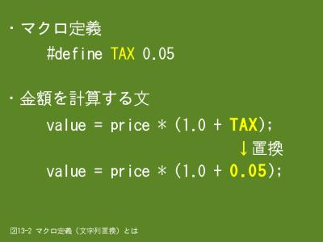

13. プリプロセッサ（2/2）
13.3 マクロ定義
- 
- 【図１２-２」】マクロ定義（文字列置換）とは
マクロ定義というと難しそうですが、文字列の置換と思っていただくと易しく感じると思います。図13-2を例として、文字列の置換を説明します。
まず、#defineプリプロセッサ・コマンドで置換対象文字列と、置換文字列を定義します。この例では「TAX」が置換対象文字列となり、「0.05」が置換文字列になります。つまり、ソースファイル中の「TAX」を「0.05」に置換することを指示することになります。
この結果、金額を計算する文の「TAX」が「0.05」に置換されますので、文としては「value = price * (1.0 + 0.05);」になります。実際にコンパイルするのはこちらの文になります。
マクロ定義はこの例のように、定数定義に使うことが多いと思いますが、その場合、次のような利点があります。
また、関数の代わりに使うことも出来ますので、その場合は性能向上が見込めます。
13.3.1 形式
マクロ定義は#defineで行いますが、これに関連するプリプロセッサ・コマンドが沢山あります。当講座では#defineのみ説明し、その他のプリプロセッサ・コマンドについては省略します。
形式は２種類ありますが、引数を指定する方は主に関数の代わりにマクロ定義を使う場合に使用します。
※ 引数なしの場合
#define 置換対象文字列 置換文字列
※ 引数がある場合
#define 置換対象文字列(引数１, 引数２, …) 置換文字列
置換対象文字列の後ろに括弧で括って引数を指定した場合は、置換文字列中の引数文字列と一致する部分を引数の値で置き換えます。これを使うと、簡単な関数であればマクロで代用することが出来ます。具体的には次の例のようになります。
#define TAX 0.05
#define GetValue(pPrice) (pPrice) * (1.0 + TAX) ← pPriceが引数です
/* 使用例１ */
value = GetValue(price); ← value = (price) * (1.0 + 0.05);に置換されます
/* 使用例２ */
value = GetValue(price + 100); ← value = (price + 100) * (1.0 + 0.05);に置換されます
関数の代わりにマクロ定義を使う場合は、演算子の優先順位に注意してください。具体的には引数は括弧で括って、優先順位を上げておくとよいでしょう。次の例では優先順位の関係で正しい金額計算が出来ません。
#define TAX 0.05
#define GetValue(pPrice) pPrice * (1.0 + TAX)
value = GetValue(price + 100); ← value = price + 100 * (1.0 + 0.05);に置換されます
13.3.2 例題
肥満度を計算して正常・異常を判定して結果を出力します。構造体や定数をヘッダファイル（./include/ex13_1.h）に記述しています。
/* ./include/ex13_1.h */
/* 肥満の状態を表すフラグ */
typedef enum
{
BMI_NORMAL, /* 正常 */
BMI_UNDER, /* 低い */
BMI_OVER, /* 高い */
BMI_ERROR /* 判定不可 */
} BMI_JUDGE;
/* 肥満度データを格納する構造体 */
typedef struct
{
int number; /* 番号 */
double weight; /* 体重 */
double height; /* 身長 */
double bmi; /* 肥満度 */
BMI_JUDGE judge; /* 肥満状態 */
} BMI;
/* 肥満状態を判定するための定数 */
#define WEIGHT_LIMIT_UNDER 18.5
#define WEIGHT_LIMIT_OVER 25.0
/* プログラム終了コード */
typedef enum
{
NORMAL_TERM, /* 正常終了 */
ABNORMAL_TERM /* 異常終了 */
} PROG_CODE;
/* 関数プロトタイプ宣言 */
void CalcBmiEx(BMI *Bmi);
/* ex13_1_1.c */
#include <stdio.h>
#include "./include/ex13_1.h"
int main(void)
{
BMI bmi_data;
PROG_CODE return_code = NORMAL_TERM;
printf("肥満度(BMI)の計算を行います\n");
printf("体重(kg)と身長(cm)を入力してください ==> ");
scanf("%lf%lf", &bmi_data.weight, &bmi_data.height);
CalcBmiEx(&bmi_data);
printf("肥満度は%.2fです。", bmi_data.bmi);
switch(bmi_data.judge)
{
case BMI_NORMAL:
printf("正常です。\n");
break;
case BMI_UNDER:
printf("低すぎます。\n");
break;
case BMI_OVER:
printf("高すぎます。\n");
break;
default:
printf("判定出来ません。\n");
return_code = ABNORMAL_TERM;
}
return return_code;
}
/* ex13_1_2.c (CalcBmiEx関数) */
#include "./include/ex13_1.h"
void CalcBmiEx(BMI *pBmi)
{
double height;
/* 体重と身長の値をチェック */
if (pBmi->weight > 0.0 && pBmi->height > 0.0)
{
/* 身長をセンチメートルからメートルに変換 */
height = pBmi->height / 100.0;
/* 肥満度(BMI) = 体重(kg) / 身長(m) / 身長(m) */
pBmi->bmi = pBmi->weight / height / height;
/* 肥満度がWEIGHT_LIMIT_UNDER〜WEIGHT_LIMIT_OVERの範囲であれば正常 */
if(pBmi->bmi >= WEIGHT_LIMIT_UNDER && pBmi->bmi <= WEIGHT_LIMIT_OVER)
{
pBmi->judge = BMI_NORMAL; /* 正常 */
}
else
{
if(pBmi->bmi > WEIGHT_LIMIT_OVER)
{
pBmi->judge = BMI_OVER; /* 高い */
}
else
{
pBmi->judge = BMI_UNDER; /* 低い */
}
}
}
else
{
pBmi->bmi = 0.0;
pBmi->judge = BMI_ERROR;
}
return;
}
$ cc -o ex13_1.prg ex13_1_1.c ex13_1_2.c
$
$ ./ex13_1.prg
肥満度(BMI)の計算を行います
体重(kg)と身長(cm)を入力してください ==> 67.5 188
肥満度は19.10です。正常です。
$
$ ./ex13_1.prg
肥満度(BMI)の計算を行います
体重(kg)と身長(cm)を入力してください ==> 81.5 165.5
肥満度は29.76です。高すぎます。
$
$ ./ex13_1.prg
肥満度(BMI)の計算を行います
体重(kg)と身長(cm)を入力してください ==> 81.5 -165.5
肥満度は0.00です。判定出来ません。
$ echo $?
1
$